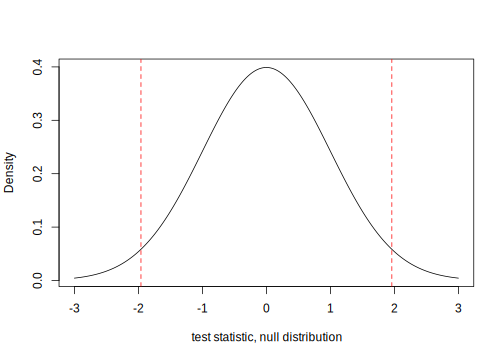
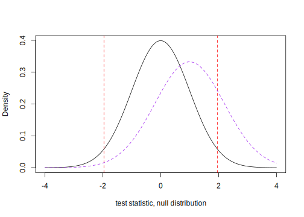

6.3 Sampling Considerations
What makes a sample a good sample?
Your ideas …
Who is in our sample? For an average person’s discussion of polling and sampling and participating in surveys, see 37-39:40 minutes of the Nateland podcast.
How can we check for data quality? What elements are a part of data quality? I.e., what should we be worried about?
Your ideas …
What are examples of bot checks/attention checks?
Your ideas …
When should we actually exclude subjects? When should we not?
Your ideas …
6.3.1 Power Analysis
We are often concerned about guarding against false positives. We do this by setting a conservative threshold for judging significance in hypothesis testing.
- Type I error: “false positive”: the error of rejecting a null hypothesis when it is actually true +Conventionally, our tolerance for false positives are \(\alpha = 0.05\).
- Type II error: “false negative”: conclude there is no effect (failing to reject the null) when there is one.
- We tend to refer to this as \(\beta\) and statistical power is \(1-\beta\) (true positive)
What is a test’s Power?
- Power helps us guard against false negatives. It is the probability of a true positive:
- Finding a significant effect if one is there,
- (1- Type II) where a Type II error is when you conclude there is no effect when there is one.
- See discussion on power from EGAP.
\[\begin{align*} 1 - Pr(\text{Type II error}) &= 1 - \beta\\ &= \underbrace{\Phi (\frac{| \mu_t -\mu_c|\sqrt{N}}{2\sigma} - \Phi^{-1}(1 - \frac{\alpha}{2}))}_{\text{A common formula}} \\ &= \Phi (\frac{| \mu_t -\mu_c|\sqrt{N}}{2\sigma} - \underbrace{ 1.96}_{\text{At conventional levels}})\\ &= \text{Prob test stat exceeds threshold for rejecting null} \end{align*}\]
Terms
- \(\beta\) is measure of power, between 0 and 1.
- \(\Phi\) is the CDF of the normal distribution (think: area under the curve), and \(\Phi^{-1}\) is its inverse.
- \(\mu_t - \mu_c\) is the difference in average outcomes in the treatment and control groups.
- \(\sigma\) is the standard deviation of outcomes.
- \(\alpha\) is our significance level - conventionally, 0.05.
- \(N\) is the total number of subjects. This is the only variable that is under the direct control of the researcher.
Helpful video
Recall that t-statistics beyond the critical values (e.g., 1.96) will result in rejecting the null hypothesis. 
We want to know the probability that our test statistic will fall in this rejection region. 
6.3.2 Power in R
To conduct a power analysis
We need all but one of:
- sample size
- effect size in population
- standard deviation of outcome in population
- desired power level
- significance level
What makes this calculation difficult?
For continuous variables, we can calculate the power of either one-sample or two-sample test using the command power.t.test(n, delta, sd, sig.level, power, type, alternative).
nis the number of observations;deltais the true difference in means;sdis the standard deviation within the population;sig.levelis the test’s level of significance (Type I error probability);typeis the type of t-test (“two.sample”, “one.sample” or “paired”);alternativespecifies a direction of the test (“two.sided” or “one.sided”)poweris the power of the test
Note on effect sizes
Cohen’s \(d = \frac{delta}{\sigma}\) = \(\frac{\tt delta}{\tt sd}\)
- Problem: We usually don’t know \(\sigma\) or delta.
- Solution 1: Use sample data for pooled standard deviation (\(\hat{s}_y\)) and difference in means (\(\bar{y}_T - \bar{y}_C\)).
- Solution 2: Use rules of thumb, .2, .5, .8 (e.g.,
delta= .5 andd= 1})
- Cohen,Jacob.1992.Statistical power analysis.Psychological Science
## Leave one argument blank or = NULL
## Power for an 800-person study with .25 effect size and 400-person groups
power.t.test(n= 400,
delta = .25, sd=1, sig.level = .05,
power = NULL)##
## Two-sample t test power calculation
##
## n = 400
## delta = 0.25
## sd = 1
## sig.level = 0.05
## power = 0.9419449
## alternative = two.sided
##
## NOTE: n is number in *each* group## What effect size would we need for 80% power?
power.t.test(n= 400,
delta = NULL, sd=1, sig.level = .05,
power = .8)##
## Two-sample t test power calculation
##
## n = 400
## delta = 0.1983417
## sd = 1
## sig.level = 0.05
## power = 0.8
## alternative = two.sided
##
## NOTE: n is number in *each* group6.3.2.1 Additional Resources for Power in R
Power analysis in Conjoint Experiments by Martin Lukac: tool
R resource: Additional functions from Statmethods
For proportions, The command power.prop.test(n, p1, p2, sig.level, power, alternative) may be used to calculate the power. Note that this command may only be used to calculate power for a two-sample test.
nis the number of observations per group (assumes equal size);p1the proportion in group 1;p2the proportion in group 2;sig.levelis the test’s level of significancealternativespecifies a direction of the test (“two.sided” or “one.sided”);powerspecifies power of the test
## What sample size for difference in proportions at 80% power?
power.prop.test(n=NULL, p1 = .75, p2=.80,
sig.level=.10, power = .8)##
## Two-sample comparison of proportions power calculation
##
## n = 861.4198
## p1 = 0.75
## p2 = 0.8
## sig.level = 0.1
## power = 0.8
## alternative = two.sided
##
## NOTE: n is number in *each* group6.3.3 Relationship between Error Rates and Multiple Testing
\[\begin{align*} Pr(\text{at least one significant result}) &= 1 - Pr(\text{no significant result})\\ &= 1 - (1 - 0.05)^{\text{number of tests}} \end{align*}\]
With 20 tests, you have a 64% chance of observing at least one significant result even if all are not significant.
1 - (1 - 0.05)^20## [1] 0.6415141For this reason, researchers may make adjustments to p-values when they have several tests in a single analysis. See EGAP’s resource